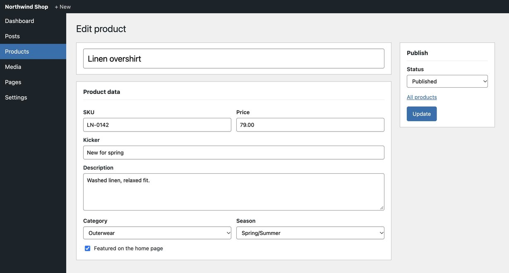

Fields by label, name or ref. --dry shows the diff; nothing is saved until you say so.
$ beam set --dry @product.json preview: 4 fields would change out of 4 resolved ~ Category - "Shirts" + "Outerwear" ~ Featured on the home page - "off" + "on" ~ Kicker - "" + "New for spring" ~ Price - "89.00" + "79.00" $ beam set @product.json 4 filled
